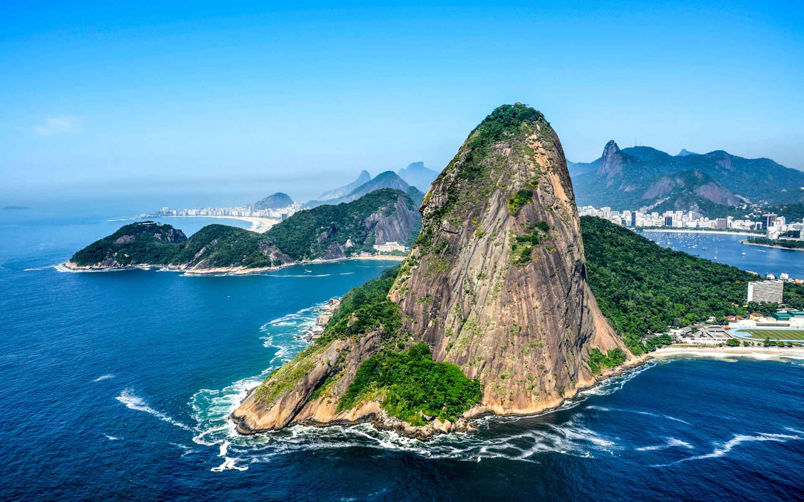
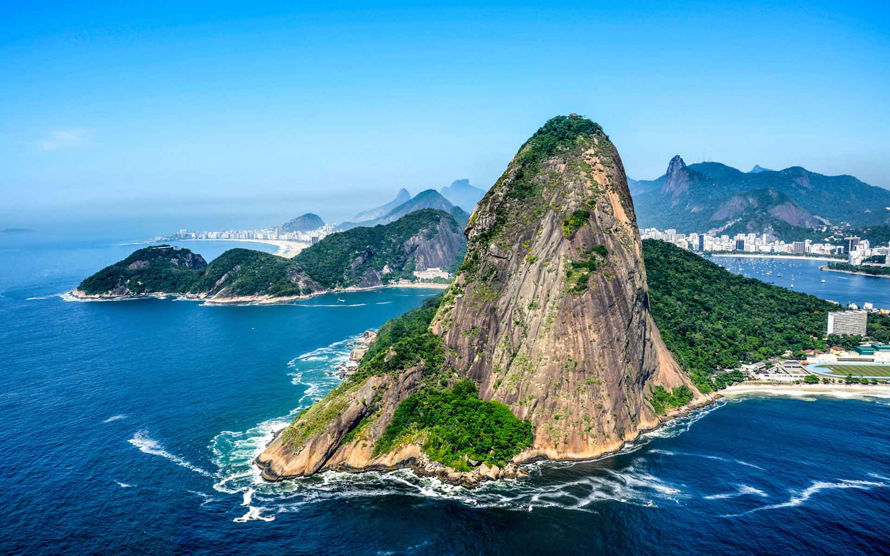

Known as the "Cidade Maravilhosa" (Marvelous City), Rio de Janeiro is one of the most vibrant and beautiful destinations in the world. With golden beaches, lush mountains, and lively culture, Rio is a city that blends natural wonders with urban energy.
Top Attractions
No trip to Rio is complete without visiting Christ the Redeemer, the towering statue on Corcovado Mountain that overlooks the entire city. For breathtaking views, take the cable car up Sugarloaf Mountain, where you can watch the sunset over Guanabara Bay.
Beach lovers flock to Copacabana and Ipanema, two of the most famous stretches of sand in the world. If you're a sports fan, don’t miss Maracanã Stadium, a historic football arena that has hosted World Cup finals and Olympic events.
 

Food & Drink
Brazilian cuisine is full of rich flavors, and Rio offers plenty to taste. Be sure to try feijoada, a traditional black bean stew with pork, or grab some warm pão de queijo (cheese bread). On hot days, cool down with an açaí bowl or sip a refreshing caipirinha, Brazil’s most famous cocktail.


Culture & Festivals
Rio is the heart of Brazil’s cultural scene. Music and dance fill the streets, with samba clubs and lively nightlife in neighborhoods like Lapa. The highlight of the year is the Carnival, a world-famous celebration of parades, costumes, and samba schools.
Travel Tips
The best time to visit Rio is between December and March, when summer weather and Carnival celebrations bring the city to life. Portuguese is the official language, and the local currency is the Brazilian Real (BRL). While Rio is generally safe for tourists, it’s smart to stay aware of your surroundings, especially in crowded areas.